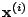
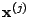
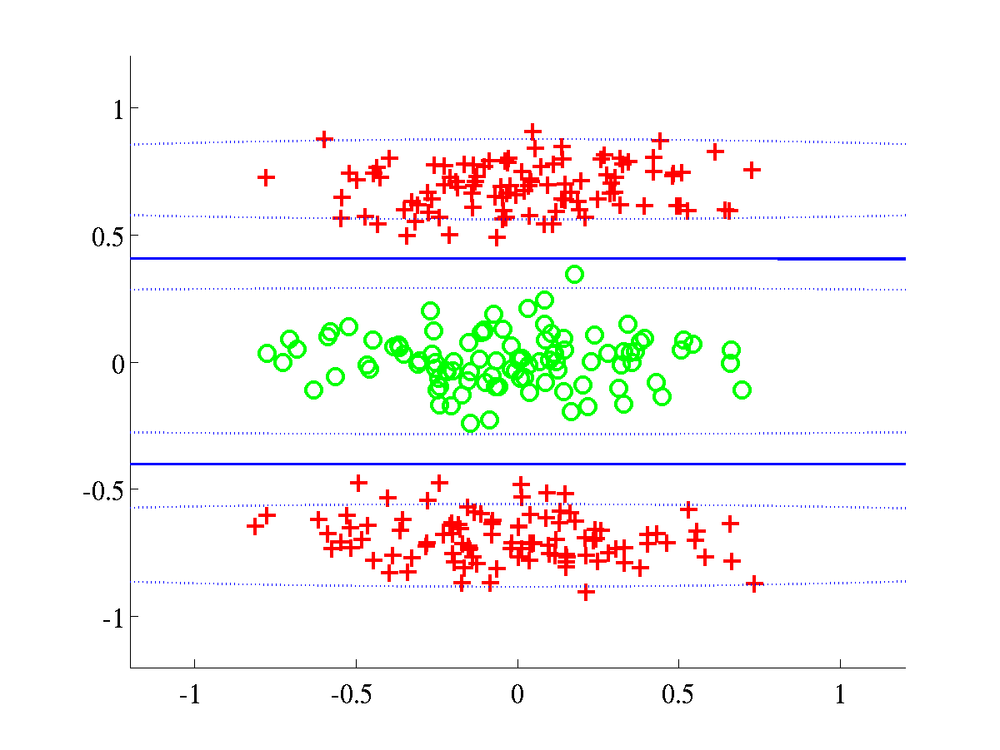
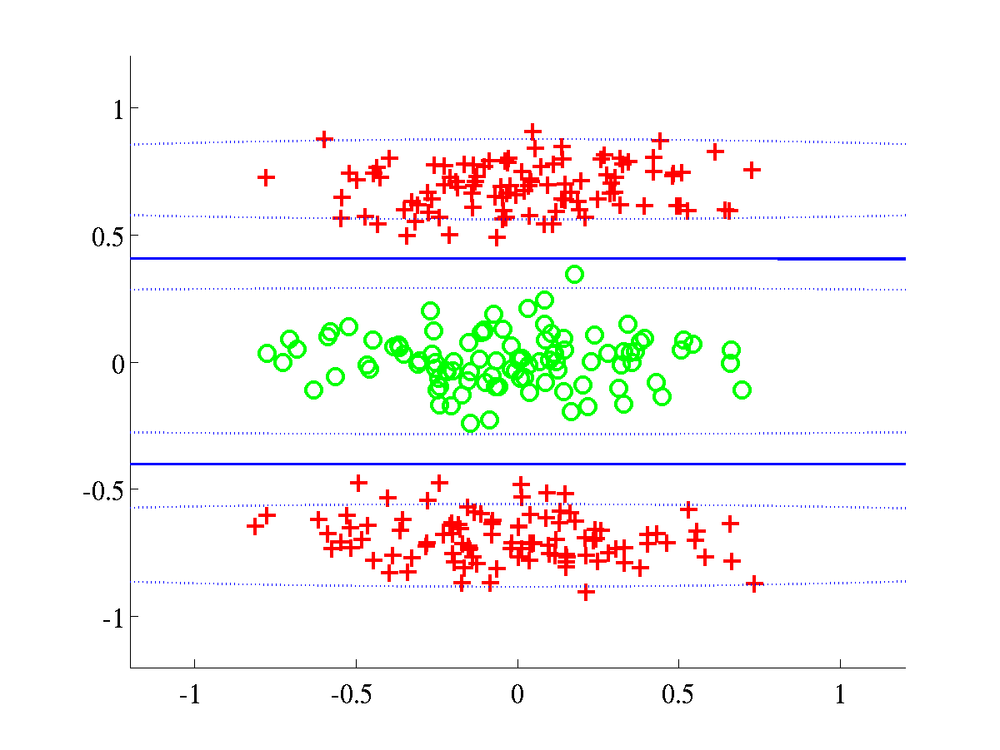

| home | | research | | people | |
|
|
Current release is 0.12
Release 0.12 was used for the experiments presented in [1]. The code was written with flexibility in mind so probably there is room to make improvements in terms of efficiency of computation.
Release 0.11 corresponds to the results presented in [2].
The BFD software requires some functions, written by Neil D. Lawrence, that have been put together in form of the NDLUTIL toolbox. You may access this toolbox with the username and password you are given when you register for the BFD toolbox. There are many versions of this toolbox but we recommend only a few of them in order to obatin the results of [1].
| Toolbox | Version |
|
NDLUTIL |
0.12 (or below) |
|
Netlab |
3.3 (It should work with v3.2 as well) |
|
ls-SVMlab |
1.5 |
To obtain the classification results for benchmark data it will be necessary to download Gunnar Rätsch's data, available at [5]. You will also need the function normal, written by Ian T. Nabney. Note: this function does not belong to the Netlab toolbox, but is rather a worked example.
Please give a read to the readme.txt file that comes in this distribution to have more details about the installation procedure.
The experiments with synthetic data, presented in [1], can be recreated by using the function bfdClassifyToyData. This function can be applied on the four synthetic datasets included in the toolbox, henceforth referred as: spiral, overlap, bumpy and relevance. bfdClassifyData also allows the use several type of GP priors, among them an RBF and an ARD-composed one. The spiral problem was first proposed by [3] and the dataset included in this distribution is based on the file found at [4].
Given the inputs  and  we have implemented the RBF prior in the following way,
Just run the following commands from Matlab's command prompt
>> dataset = 'overlap';
>> kernelType = {'rbf', 'bias', 'white'};
>> model = bfdClassifyToyData(dataset, kernelType);
For each dataset (spiral, overlap, bumpy and relevance) these commands should produce the plots shown below. The function bfdClassifyToyData also returns a structure model containing all the information about the discriminant.
In order to run experiments with the ARD-composed kernel, it is necessary to use a different value for the variable kernelType, as it is shown below.
>> dataset = 'spiral';
>> kernelType = {'rbfard', 'linard', 'bias', 'white'};
>> model = bfdClassifyToyData(dataset, kernelType);
The script should produce the plots shown below.
 
There are several demos included in this distribution and two of them were specifically written to obtain some of the results presented in Table 1 of reference [1]. More specifically, these demos generate ROC curves for either banana or breast-cancer data and then obtain statistics related to the AUC's (area under ROC curves).
The first demo can be run from the command-line as shown below
>> demAUCbanana
After execution, a file
banana_rbfbiaswhite_test_AUC_info.txt
will be created inside the directory <bfd-path>/bananaROC/. This file contains several statistics related to the ROC curves of banana and should look like this
Dataset: banana
Kernel used: rbfbiaswhite
These are some statistics of the ROC curves
###########################################
mean = 0.950725
median = 0.952039
max = 0.960705
min = 0.929625
std = 0.006099
<bfd-path>/bananaROC/ will be stored, for example a copy of the ROC curve for every test instance of banana.
The second demo does the analogue process for breast-cancer. Hence it is required to run
>> demAUCbreastCancer
Dataset: breast-cancer
Kernel used: rbfbiaswhite
These are some statistics of the ROC curves
###########################################
mean = 0.734383
median = 0.736931
max = 0.909649
min = 0.615699
std = 0.052524.
During execution of either of the scripts (demAUCbanana or demAUCbreastCancer) the ROC curve of each test instance of the datasets will be shown on the screen for a couple of seconds. This should look as shown below.
An extra script obtains ROC curves (and additional statistics) for the heart dataset; this time according to the results of Table 2 of reference [1]. Again, it is only a matter of running a script.
>> demAUCheart
Dataset: heart
Kernel used: rbfardlinardbiaswhite
These are some statistics of the ROC curves.
###########################################
mean = 0.909429
median = 0.908183
max = 0.960591
min = 0.845779
std = 0.027045
The histograms presented in Figure 10 of reference [1] can be created by running two scripts. The first script
>> demHistTwonorm
<bfd-path>/twonorm_avgHistogram. Among other things, a couple of .eps files will contain the average histograms of training and test data. Such histograms should be like the ones below.
The batch of histograms of waveform are obtained by running the script
>> demHistWaveform
bfdClassifyData and bfdClassifyToyData. Please note that in order to recreate the results of [1], it will also be necessary to read the file experimentResults.txt included in this distribution.